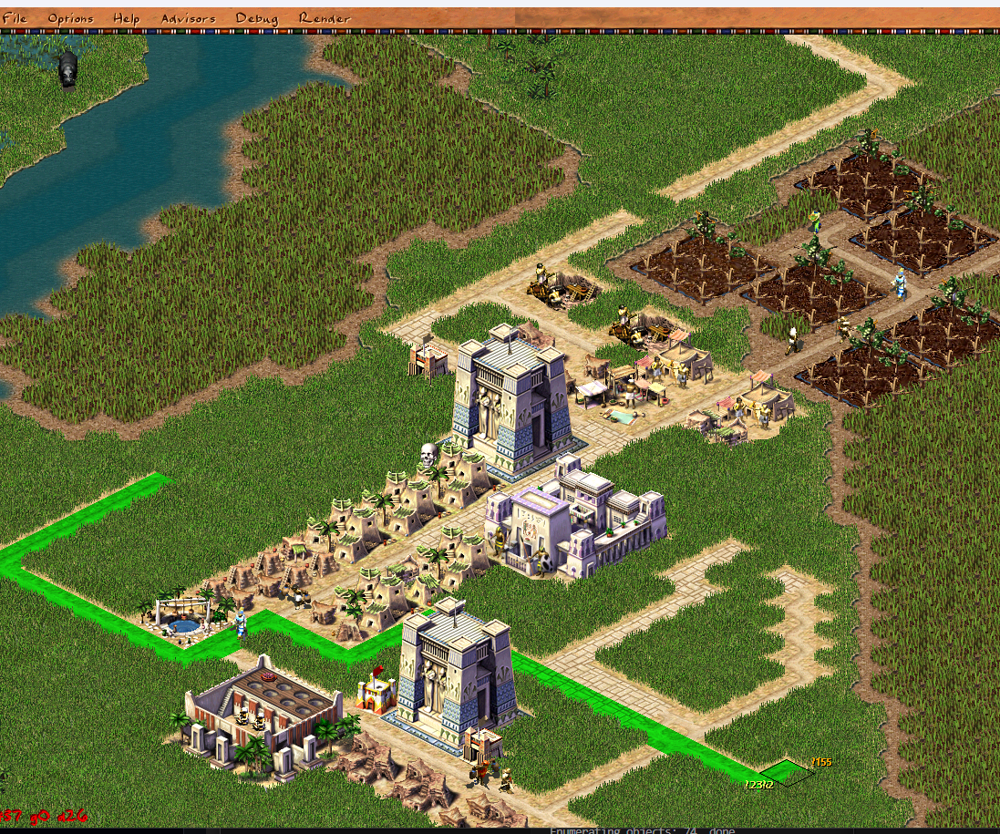

Road Construction Moves to MuJS

Road building is one of the most-used tools in the game — you drag it across the map constantly, and it has to do real work on every frame: find a path, decide which junction sprite each tile should show, and tell you whether what you're about to place is valid. All of that logic used to live in C++ inside building_road. It now lives in scripts, in src/scripts/building/road.js, where it can be hot-reloaded and read like the gameplay rules it actually encodes.
What Changed
- The road ghost preview and per-frame construction update are now MuJS event handlers (
building_road, ghost_previewandbuilding_road, construction_update) instead of C++ methods onbuilding_road. - Path routing during a drag is computed script-side:
construction_updatecalls the routing primitives, runsrouted_building.preview_path()from start to end, and stores the resulting tiles oncity.planner.preview_path. - Junction sprites are picked in script. Each preview tile inspects its neighbours — both existing
TERRAIN_ROADtiles and the other tiles along the dragged path — so corners and tees render the same way the finished road will. - New tile-based bindings expose the engine to scripts:
__map_tile_at_grid_offset,__map_routing_distance_at_grid_offset,__place_routed_building,__map_image_at, and terrain helpers liketerrain.add/terrain.is. - Build rotation state (
global_rotation,road_orientation) and the rotate / change-variant hotkeys moved ontobuild_plannerand intocity_planner.js, dropping the matching C++ event subscriptions.
How the Drag Preview Works Now
While you drag a road, construction_update fires each frame. It restores the map from the undo buffer, recomputes routing distances for the road from the drag's start tile, and asks the routed-building helper for the path to the end tile:
__game_undo_restore_map(0)
city.planner.preview_path = null
var start = { x: ev.start_x, y: ev.start_y }
var end = { x: ev.end_x, y: ev.end_y }
if (!__map_routing_calculate_distances_for_building(ROUTED_BUILDING_ROAD, start)) return
var preview = routed_building.preview_path(ROUTED_BUILDING_ROAD, start, end)
if (!preview.ok) return
var items = __place_routed_building(start, end, ROUTED_BUILDING_ROAD)
city.planner.preview_path = preview.tiles
The path tiles are placed on the map temporarily — and undone again next frame — so the ghost can read each tile's real sprite via __map_image_at. That is what makes a half-drawn road show correct corners and intersections instead of a row of disconnected straight pieces.
Two Ways to Draw the Ghost
A new option, gameui_road_preview_in_map_order, lets the dragged preview render inside the city's isometric pass instead of always floating on top via the planner overlay. Valid tiles are marked with the green TERRAIN_PLANER_FUTURE mask and sort naturally with the terrain; blocked tiles still fall back to the red overlay, and plain hover-without-drag keeps the old overlay behaviour. The result reads more like part of the map and less like a HUD layer.
Fixes Along the Way
Moving this much logic surfaced a few rough edges, now fixed:
- Placing a road over an existing road drew a red "blocked" mask, because existing road tiles counted as
TERRAIN_NOT_CLEAR. Road tiles are now excluded from that check, so continuing an existing road shows a green ghost. __map_tile_at_grid_offsetwas returningundefinedover its result; it now correctly returns atile2i, which fixed the grid-offset tile binding the preview relies on.- Cancelling construction now emits
event_build_menu_submenu_changed, so the highlighted sidebar category button is released instead of staying stuck down.
Verification
To keep this from regressing, there's a new integral test — tests/12_road_segment_placement.js — that builds a road across the map through the real build_planner (routing preview, then construction start / update / finalize) and asserts that every tile along the previewed path ends up flagged TERRAIN_ROAD.
Why This Matters
Road sprite selection and placement validity are gameplay rules, not engine internals — keeping them in script means they can be read, tweaked, and hot-reloaded without a recompile, the same way building windows and overlays already are. It also pushes more of the construction planner across the C++/JS boundary, which is the longer-term direction for the whole build system.